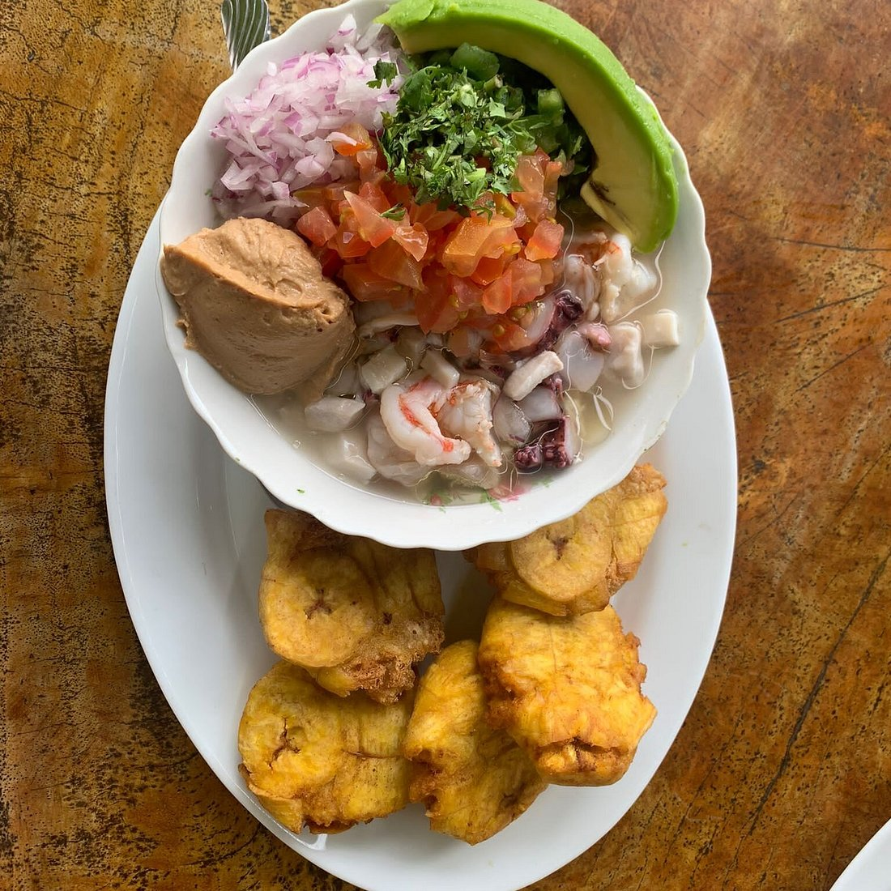

Sabores de la Costa
Puerto López es un lugar donde los visitantes pueden disfrutar de la gastronomía manabita, especialmente de los platos preparados con pescados y mariscos frescos. Su comida es parte importante de la cultura y el turismo de esta localidad. Puerto López ofrece una variedad de platos. Su arte culinario se basa en mariscos y también se elaboran preparaciones a base de la ostra (concha Spondylus), considerada un molusco sagrado. Puerto López ofrece dentro de su servicio turístico una variada oferta gastronómica. Los visitantes pueden encontrar puestos en la playa, cevicherías y restaurantes en la calle principal o junto a la costa. Uno de los platos que se pueden disfrutar es la parrillada de mariscos, que generalmente se ofrece en porciones para compartir.
Platos típicos
Ceviche de pescado o camarón
Es un plato preparado con pescado o camarón, limón, cebolla y otros ingredientes. Se caracteriza por su sabor fresco y es una de las opciones que se pueden encontrar en la costa ecuatoriana.

Pescado frito
Es una preparación tradicional que se sirve generalmente con arroz, patacones y ensalada. Es una buena opción para quienes disfrutan de los sabores del mar.
Arroz marinero
Es un plato elaborado con arroz, diferentes mariscos y condimentos. Es conocido por su variedad de sabores y es popular en las zonas costeras.
Encocado de pescado
Es una preparación de pescado acompañada de una salsa a base de coco y otros ingredientes que le dan un sabor especial.
Bebidas que puedes disfrutar
- Jugos naturales de frutas.
- Agua de coco.
- Limonada.
Importancia de la gastronomía
La gastronomía de Puerto López permite conocer las costumbres de la región y disfrutar de los sabores tradicionales de Manabí. Además, los restaurantes y negocios de comida contribuyen al turismo y a la economía local.